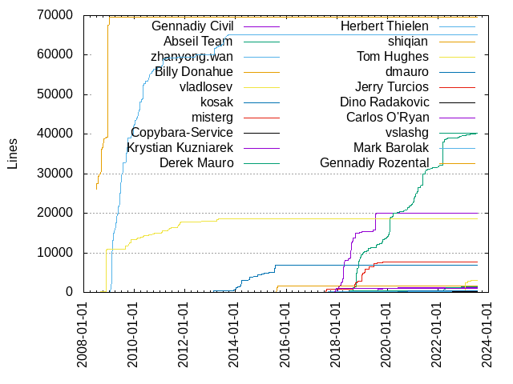
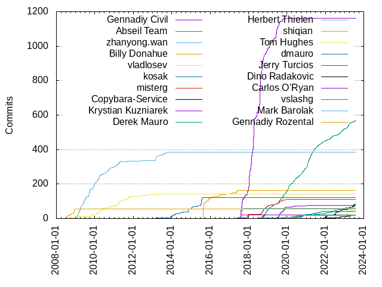

Authors
| Author | Commits (%) | + lines | - lines | First commit | Last commit | Age | Active days | # by commits |
|---|
| Gennadiy Civil | 1162 (27.20%) | 20051 | 28882 | 2017-05-02 | 2019-11-22 | 934 days, 2:17:12 | 283 | 1 |
| Abseil Team | 568 (13.30%) | 40296 | 50839 | 2018-08-15 | 2023-07-28 | 1807 days, 20:12:08 | 423 | 2 |
| zhanyong.wan | 384 (8.99%) | 65120 | 35813 | 2009-01-14 | 2013-11-21 | 1771 days, 21:29:20 | 202 | 3 |
| Billy Donahue | 162 (3.79%) | 1588 | 1686 | 2015-08-21 | 2017-06-23 | 672 days, 5:45:41 | 59 | 4 |
| vladlosev | 141 (3.30%) | 18624 | 3283 | 2008-07-14 | 2013-04-25 | 1745 days, 17:32:54 | 90 | 5 |
| kosak | 121 (2.83%) | 6851 | 2541 | 2013-02-22 | 2015-07-27 | 885 days, 5:42:33 | 26 | 6 |
| misterg | 110 (2.57%) | 7649 | 13942 | 2017-08-01 | 2019-12-06 | 856 days, 22:25:05 | 72 | 7 |
| Copybara-Service | 84 (1.97%) | 0 | 0 | 2021-11-18 | 2023-07-24 | 613 days, 0:37:39 | 64 | 8 |
| Krystian Kuzniarek | 76 (1.78%) | 1307 | 5124 | 2019-07-09 | 2021-11-16 | 860 days, 11:35:03 | 36 | 9 |
| Derek Mauro | 69 (1.62%) | 1460 | 866 | 2018-07-10 | 2023-07-19 | 1835 days, 4:50:26 | 54 | 10 |
| Herbert Thielen | 60 (1.40%) | 166 | 26925 | 2017-05-09 | 2017-10-29 | 172 days, 23:17:56 | 17 | 11 |
| shiqian | 57 (1.33%) | 69532 | 2004 | 2008-07-03 | 2009-01-09 | 190 days, 1:48:53 | 33 | 12 |
| Tom Hughes | 48 (1.12%) | 3105 | 2576 | 2022-12-08 | 2023-04-27 | 140 days, 8:43:57 | 21 | 13 |
| dmauro | 42 (0.98%) | 491 | 4112 | 2020-03-16 | 2021-11-09 | 603 days, 5:00:28 | 33 | 14 |
| Jerry Turcios | 21 (0.49%) | 5 | 8 | 2018-09-28 | 2018-10-31 | 32 days, 22:00:38 | 16 | 15 |
| Dino Radakovic | 21 (0.49%) | 241 | 79 | 2021-12-15 | 2023-06-14 | 545 days, 22:05:05 | 20 | 16 |
| Carlos O'Ryan | 21 (0.49%) | 991 | 673 | 2017-07-01 | 2018-02-28 | 242 days, 1:37:12 | 9 | 17 |
| vslashg | 20 (0.47%) | 0 | 0 | 2019-10-23 | 2020-10-27 | 369 days, 20:41:59 | 12 | 18 |
| Mark Barolak | 18 (0.42%) | 0 | 0 | 2019-12-02 | 2020-11-10 | 343 days, 22:40:42 | 8 | 19 |
| Gennadiy Rozental | 18 (0.42%) | 0 | 0 | 2019-11-26 | 2020-11-24 | 363 days, 11:59:14 | 8 | 20 |
These didn't make it to the top: Xiaoyi Zhang, Chris Johnson, assafpr, Joshua Cannon, Enji Cooper, Chris, Aaron Jacobs, Andy Soffer, Andy Getz, Tanzinul Islam, Jonny007-MKD, CJ Johnson, Vladimir Goncharov, Hossein Ghahramanzadeh, Fabrice de Gans-Riberi, Arkady Shapkin, jgm, drgler, bryanzim, Samuel Roth, Gaspard Petit, durandal, dinord, David Benjamin, Arthur O'Dwyer, Anton Klautsan, tisi1988, srz_zumix, preston.a.jackson, gpetit, gennadiycivil, Zulkarnine Mahmud, Mark Mentovai, Hyuk Myeong, Denis Hananein, David Sunderland, ofats, Victor Costan, Scott Graham, Piotr Nycz, Maurice Gilden, James Dennett, Christian Clauss, mazong1123, Szymon Sobik, Mario Voorsluys, Jonathan Wendeborn, Doug Greiman, Dominic Sacré, David Seifert, Conor Burgess, Bernhard Bauer, Baruch, Arkadiy Shapkin, Adam Badura, yagneshprajapati, krzysio, danilcha, chandlerc, Vollstrecker, Romain Geissler, Roland Leißa, Robin Lindén, Piotr Paczkowski (trzeci.eu), Nico Weber, Masaru Tsuchiyama, Marco Molteni, Josh Bodily, Dominic Jodoin, Dino Radaković, Chris Baish, Bryan Zimmerman, Ayush Joshi, Alyssa Wilk, Adrian Moran, yutotnh, preston.jackson, peter, nnorwitz, kuzkry, duxiuxing, Zhongming Qu, Wojciech Mamrak, Vertexwahn, Syohei YOSHIDA, Stian Valle, Stepan Khapugin, Shahbaz Youssefi, Sebastian Krämer, Peter Collingbourne, NINI1988, Mattias Ellert, Matthieu Longo, Matt Calabrese, Mate Pek, Mark Jan van Kampen, Manuel Binna, Loo Rong Jie, Knut Omang, Juan Ramos, Henry Schreiner, Fedor Trushkin, Dominic Meiser, Craig Scott, Claus Stovgaard, Che-Hsun Liu, Andrei Polushin, Alexey Sokolov, Alex Yursha, Akash Kumar Singh, 杜修杏, ly2048, keshavgbpecdelhi, billydonahue, anttsov, Yuriy Chernyshov, Yonggang Luo, Yannic Bonenberger, Wez, Vadim Kotov, Vadim Barkov, Thomas Amland, Takuto Ikuta, Stefano Soffia, Sergey, Scott Slack-Smith, Ryan Yee, Rong Ou, RerEngineer, Pro3757, Phoebe Liang, Petr Hosek, Peter Levine, Pavel Samolysov, Olivier Clavel, Niranjan Nilakantan, Nic Holthaus, Neal Gompa, Muhammad Hilman Beyri, Matthias Grob, Matthew Woehlke, Matthew Brandyberry, Martin Storsjö, Martin Maly, Jérôme Travert, Jose Nino, Jonathan Wakely, Jae Heon Lee, Jacob Schloss, Jacob Meacham, Igor Nazarenko, Hector Dearman, Gregory Pakosz, Google Code Exporter, Gasprd Petit, Florin Crișan, Don Huff, Dawid Kurek, David Schuldenfrei, David Neto, David Mott, Daniele Tamino, Daniel Krügler, Dan Albert, Dakota Hawkins, Chaoran Yang, Calvin Hill, Brad Messer, Alexander Nikforov, Aleksey Kozin, λtlas, xyb, xerus2000, wxf, whame, vpfautz, victordk13, tsunanet, trzeci, tommyleo2, theidexisted, tbarbier, stkhapugin@chromium.org, slowy07, ranodeepbanerjee, ppenguin, platisd, pateldeev, niranjan, nicolacavallini, mhermas, mehagar, medithe, malcops, m-gupta, lmat, lipk, kimvaleen, kakkoko, jorgehb, jasjuang, iignatev, hyuk.myeong, gonzalobg, fo40225, elixir, duianto, dnsunderland, dmcardle, deki, daquexian, cclauss, bartshappee, aribibek, antismap, Zebedee Mason, Zach Toogood, Yi Zheng, Yesudeep Mangalapilly, Wojciech Kaluza, Will Vining, Wiktor Garbacz, Wenyuan Yan, Vũ Phạm, Vinson Lee, Vincent Palancher, Vasilii Pochkaenko, Vadim Berezniker, Troy Holsapple, Tom Lachecki, Tobias Müller, Tobias Markus, Ting-Wei Lan, Tim Ansell, Tengfei Niu, Taylor Cramer, Taylor Braun-Jones, Sylvestre Gallon, Syl, SunBlack, Steven Santos Erenst, Steve Robbins, Sinclair-John, Simon Newton, Simon Glass, Siddhanjay Godre, Shlomi Nissan, Shlomi Fish, Shaindel Schwartz, Seth Raymond, Sergio Valverde, Samuel Benzaquen, Sam Sobell, Sam Roth, Sam Lunt, Sal Amato, Rytis Karpuška, Ryohei Machida, Ryan Sinnet, Ryan Schmidt, Ryan Harrison, Ruslan Manaev, Ross Wang, Roman Perepelitsa, Roman Lebedev, Rohan Joyce, Robert Woldberg, Robert Luberda, Robert Adam, Rob Earhart, ReadmeCritic, Raul Tambre, Ram Kumar K R, Przemek Kryger, Pratyush Choudhary, Prashant Jaikumar, Piotr Kąkol, Pieter-Jan Busschaert, Philipp Paulweber, Philipp Hasper, Philip Mourdjis, Peter Newman, Peter Hill, Peter Boström, Peter Barker, Paul Wilkinson, Paul Wankadia, Paul Rosset, Paul Hadfield, Paul Groke, Patryk Obara, Patryk Gawroński, Patrick J. LoPresti, Orgad Shaneh, Olivier Ldff, Oleksandr Yefremov, Oleksandr Dyakov, Niels Dekker, Nagy Gergő, Mike Kruskal, Mike Hommey, Mike Bjorge, Melroy van den Berg, Mayur Shingote, Maximilian Schwab, Matthijs Brobbel, Matthieu, Matthias Walter, Matt Rajca, Matei Dibu, Marzo Sette Torres Junior, Martin Oberhuber, Martin Erik Werner, Martijn Vels, Marius Brehler, Mario Emmenlauer, Marco Studerus, Marco Bubke, Marat Dukhan, Manuel Vives, Manuel VIVES, Manoj Gupta, Malcolm Parsons, Maciej Sroczyński, MR-A, Lukas Mosimann, Ludger Paehler, Lingfeng Yang, Li Peng, Levente Polyak, Lawrence Wolf-Sonkin, Laurent VERDOÏA, LI Daobing, Knut Petter Svendsen, Kelly Walker, Keith Smiley, Keiichi Watanabe, Kasra Hashemi, Kamil Rytarowski, Kalon Mills, KO Myung-Hun, Jérémie Delaitre, Jun Jie, Julien JEMINE, Julian Arkenau, Juergen Bohl, Joris van der Pol, Joongi Kim, John Hinnegan, John Bampton, Johan Mabille, Joel Laity, Joel Anderson, Joe Alam, Joan Puigcerver, Joakim Plate, Ji Jyun-Neng, JethroSama, Jeryl Vaz, Jeremy Nimmer, Jeff VanDyke, Jason C, Jan, Jakub Młokosiewicz, Ivaylo Kirov, Ivan Oliveira Tarifa, Ilya Kravchuk, Ikko Eltociear Ashimine, Ihor Dutchak, Hugo Lindström, Hosein Ghahremanzadeh, Hosein Ghahramanzadeh, Henry Fredrick Schreiner, Henner Zeller, Hardik Vala, Guillem González Vela, Gregory Nagy, Gonzalo Brito Gadeschi, Georgi D. Sotirov, Gautham B A, Gallaecio, Fábio Junqueira, Francisco Geiman Thiesen, Filipp Andjelo, Ferenc-, Ferenc Géczi, Ezekiel Warren, Elliott Brossard, Elias Daler, Eli Lindsey, Eisoku Kuroiwa, Eduardo Cáceres, Eduardo Caceres, Edgar Riba, Diomidis Spinellis, Deniz Bahadir, Denis Samoilov, Deanna Hood, Deanna Garcia, Daus Salar, Darryl Pogue, Dariusz Ostolski, Dan Kegel, Corentin Musard, Chuck Atkins, Christophe Vidal, Christoph Strehle, Chris-Sharpe, Chris Kennelly, Case, Matt, Carlo Wood, Calum Robinson, Caleb Morse, BrukerJWD, Brian Silverman, Brian Gianforcaro, Brian, Billy SU, Berke, Benjamin Kircher, Benjamin Carman, Ben Yang, Be, Baruch Burstein, Ayaz Salikhov, Axel Kohlmeyer, Austin Sullivan, Ashley Hedberg, Ashik Paul, Arthur Sonzogni, Arseny Aprelev, Arnaud Lacombe, Aralox, Anurag Soni, Anton Sosnin, Antoine Pitrou, Andrew Siplas, Andrew Krasavin, Anders Sundman (asum), Ali Sa'ad Eddeen, Alexey Spiridonov, Alexey Klimkin, Alexander Münch, Alex Konradi, Alex Karatarakis, Alex Converse, Alecto Irene Perez, Adam Cozzette, Aaron Dierking, 1camper
Only top 20 authors shown
Only top 20 authors shown
| Month | Author | Commits (%) | Next top 5 | Number of authors |
|---|
| 2023-07 | Copybara-Service | 4 (36.36% of 11) | Abseil Team, kimvaleen, Steve Robbins, Derek Mauro, Anton Sosnin | 6 |
| 2023-06 | Copybara-Service | 11 (32.35% of 34) | Abseil Team, Juan Ramos, Dino Radakovic, Chris Johnson, Ryan Schmidt | 14 |
| 2023-05 | Copybara-Service | 6 (26.09% of 23) | yagneshprajapati, Dino Radakovic, Abseil Team, pateldeev, niranjan | 12 |
| 2023-04 | Tom Hughes | 8 (38.10% of 21) | Abseil Team, Copybara-Service, Vertexwahn, Patryk Gawroński, Jeryl Vaz | 7 |
| 2023-03 | Abseil Team | 16 (37.21% of 43) | Tom Hughes, Copybara-Service, Derek Mauro, Aaron Jacobs, gonzalobg | 13 |
| 2023-02 | Abseil Team | 11 (33.33% of 33) | Tom Hughes, Copybara-Service, Dino Radakovic, Yonggang Luo, Vũ Phạm | 11 |
| 2023-01 | Tom Hughes | 19 (59.38% of 32) | Derek Mauro, Abseil Team, SunBlack, Dino Radakovic, Copybara-Service | 6 |
| 2022-12 | Abseil Team | 7 (53.85% of 13) | Derek Mauro, Tom Hughes, Gonzalo Brito Gadeschi, Dino Radakovic | 5 |
| 2022-11 | Abseil Team | 10 (52.63% of 19) | Copybara-Service, RerEngineer, Denis Hananein, Yonggang Luo | 5 |
| 2022-10 | Abseil Team | 8 (29.63% of 27) | Copybara-Service, Denis Hananein, Dino Radakovic, Derek Mauro, Vertexwahn | 8 |
| 2022-09 | Abseil Team | 9 (39.13% of 23) | Baruch, Copybara-Service, Derek Mauro, Christian Clauss, Paul Groke | 8 |
| 2022-08 | Copybara-Service | 3 (27.27% of 11) | Dino Radakovic, Derek Mauro, Keith Smiley, Hardik Vala, Baruch | 7 |
| 2022-07 | Copybara-Service | 10 (38.46% of 26) | yutotnh, Derek Mauro, Andrei Polushin, Yuriy Chernyshov, Matei Dibu | 11 |
| 2022-06 | assafpr | 14 (41.18% of 34) | Derek Mauro, Abseil Team, Copybara-Service, Jérôme Travert, Robert Adam | 8 |
| 2022-05 | Aaron Jacobs | 10 (37.04% of 27) | Abseil Team, Gaspard Petit, elixir, Dino Radakovic, Copybara-Service | 7 |
| 2022-04 | Abseil Team | 7 (33.33% of 21) | Derek Mauro, Aaron Jacobs, Copybara-Service, Mike Hommey, MR-A | 7 |
| 2022-03 | Szymon Sobik | 5 (29.41% of 17) | Abseil Team, Copybara-Service, Brad Messer, Mattias Ellert, Dino Radakovic | 7 |
| 2022-02 | Copybara-Service | 4 (40.00% of 10) | Abseil Team, Hossein Ghahramanzadeh, Derek Mauro, Andrew Krasavin | 5 |
| 2022-01 | Copybara-Service | 7 (30.43% of 23) | Abseil Team, Hossein Ghahramanzadeh, Dino Radakovic, Derek Mauro, Ayush Joshi | 10 |
| 2021-12 | Abseil Team | 5 (31.25% of 16) | Hossein Ghahramanzadeh, Derek Mauro, Copybara-Service, Philip Mourdjis, Dino Radakovic | 7 |
| 2021-11 | Abseil Team | 8 (30.77% of 26) | Copybara-Service, dinord, assafpr, dmauro, Taylor Cramer | 14 |
| 2021-10 | Abseil Team | 5 (27.78% of 18) | dmauro, Hossein Ghahramanzadeh, lmat, dinord, Yesudeep Mangalapilly | 9 |
| 2021-09 | Abseil Team | 8 (38.10% of 21) | Christian Clauss, dmauro, dinord, Derek Mauro, Vertexwahn | 6 |
| 2021-08 | Abseil Team | 7 (36.84% of 19) | Akash Kumar Singh, dmauro, Derek Mauro, CJ Johnson, victordk13 | 8 |
| 2021-07 | Abseil Team | 9 (50.00% of 18) | CJ Johnson, slowy07, duianto, dmauro, dinord | 9 |
| 2021-06 | Abseil Team | 12 (44.44% of 27) | dmauro, CJ Johnson, Derek Mauro, Andy Soffer, dinord | 10 |
| 2021-05 | Abseil Team | 14 (73.68% of 19) | Florin Crișan, durandal, dmauro, Jason C | 5 |
| 2021-04 | Abseil Team | 20 (60.61% of 33) | Vollstrecker, dmauro, Sebastian Krämer, Dino Radaković, Andy Soffer | 8 |
| 2021-03 | Abseil Team | 23 (76.67% of 30) | Dino Radaković, Andy Soffer, Vollstrecker, Ezekiel Warren, Austin Sullivan | 6 |
| 2021-02 | Abseil Team | 26 (81.25% of 32) | Andy Soffer, platisd, dmcardle, dmauro, Be | 6 |
| 2021-01 | Abseil Team | 21 (60.00% of 35) | Derek Mauro, dmauro, Krystian Kuzniarek, CJ Johnson, ofats | 10 |
| 2020-12 | Abseil Team | 12 (48.00% of 25) | dmauro, Mattias Ellert, malcops, Yuriy Chernyshov, Sebastian Krämer | 12 |
| 2020-11 | Abseil Team | 10 (40.00% of 25) | dmauro, Andy Getz, Mark Barolak, ofats, Vinson Lee | 10 |
| 2020-10 | Abseil Team | 11 (35.48% of 31) | dmauro, Derek Mauro, vslashg, ofats, Ruslan Manaev | 14 |
| 2020-09 | Abseil Team | 11 (42.31% of 26) | Hyuk Myeong, dmauro, Andy Getz, vslashg, tbarbier | 10 |
| 2020-08 | Abseil Team | 8 (40.00% of 20) | vslashg, srz_zumix, Derek Mauro, xerus2000, krzysio | 9 |
| 2020-07 | Vladimir Goncharov | 7 (25.00% of 28) | Abseil Team, ofats, Gennadiy Rozental, vslashg, Mark Barolak | 11 |
| 2020-06 | Abseil Team | 12 (48.00% of 25) | dmauro, Vladimir Goncharov, Mark Barolak, Gennadiy Rozental, Ryan Harrison | 7 |
| 2020-05 | Abseil Team | 10 (29.41% of 34) | Derek Mauro, Gennadiy Rozental, dmauro, vslashg, Mate Pek | 12 |
| 2020-04 | Abseil Team | 10 (32.26% of 31) | Mark Barolak, Arthur O'Dwyer, Andy Getz, keshavgbpecdelhi, Olivier Ldff | 12 |
| 2020-03 | Abseil Team | 8 (22.22% of 36) | Krystian Kuzniarek, Mario Voorsluys, vslashg, Arthur O'Dwyer, Neal Gompa | 13 |
| 2020-02 | Abseil Team | 14 (63.64% of 22) | NINI1988, durandal, aribibek, Mark Jan van Kampen, Krystian Kuzniarek | 7 |
| 2020-01 | Abseil Team | 22 (66.67% of 33) | Andy Soffer, Xiaoyi Zhang, Muhammad Hilman Beyri, Mark Jan van Kampen, Krystian Kuzniarek | 8 |
| 2019-12 | Abseil Team | 13 (39.39% of 33) | Piotr Paczkowski (trzeci.eu), Mark Barolak, Shahbaz Youssefi, Matt Calabrese, trzeci | 11 |
| 2019-11 | Krystian Kuzniarek | 19 (36.54% of 52) | Abseil Team, Gennadiy Rozental, Xiaoyi Zhang, Andy Getz, vslashg | 13 |
| 2019-10 | Abseil Team | 19 (23.75% of 80) | Joshua Cannon, Gennadiy Civil, Piotr Nycz, vslashg, misterg | 18 |
| 2019-09 | Abseil Team | 11 (39.29% of 28) | Krystian Kuzniarek, misterg, kuzkry, hyuk.myeong, Shaindel Schwartz | 8 |
| 2019-08 | Krystian Kuzniarek | 22 (27.16% of 81) | Gennadiy Civil, Abseil Team, misterg, Xiaoyi Zhang, Chris Johnson | 14 |
| 2019-07 | Gennadiy Civil | 27 (40.91% of 66) | Krystian Kuzniarek, Abseil Team, misterg, Chris Baish, Adam Badura | 10 |
| 2019-06 | Gennadiy Civil | 47 (78.33% of 60) | misterg, Abseil Team, Wenyuan Yan, Tom Lachecki, Prashant Jaikumar | 9 |
| 2019-05 | Gennadiy Civil | 8 (34.78% of 23) | gennadiycivil, Abseil Team, Chaoran Yang, daquexian, Matthijs Brobbel | 9 |
| 2019-04 | Gennadiy Civil | 16 (44.44% of 36) | Abseil Team, misterg, Rong Ou, Calvin Hill, Sylvestre Gallon | 9 |
| 2019-03 | Gennadiy Civil | 8 (40.00% of 20) | Abseil Team, Enji Cooper, antismap, Tobias Müller, Syohei YOSHIDA | 7 |
| 2019-02 | Gennadiy Civil | 21 (41.18% of 51) | Enji Cooper, Abseil Team, misterg, Matthias Grob, Chris Johnson | 10 |
| 2019-01 | Gennadiy Civil | 23 (35.94% of 64) | Chris, Abseil Team, misterg, gennadiycivil, Pavel Samolysov | 15 |
| 2018-12 | Gennadiy Civil | 14 (25.93% of 54) | Abseil Team, misterg, Chris Johnson, Dominic Jodoin, Chris | 11 |
| 2018-11 | Gennadiy Civil | 12 (33.33% of 36) | Abseil Team, misterg, Robin Lindén, durandal, krzysio | 8 |
| 2018-10 | Gennadiy Civil | 34 (30.36% of 112) | Jerry Turcios, misterg, Abseil Team, Jonathan Wendeborn, peter | 27 |
| 2018-09 | Gennadiy Civil | 74 (62.71% of 118) | Jonny007-MKD, misterg, Abseil Team, Matthieu Longo, Jerry Turcios | 15 |
| 2018-08 | Gennadiy Civil | 178 (80.18% of 222) | misterg, Abseil Team, tisi1988, Tanzinul Islam, srz_zumix | 22 |
| 2018-07 | Gennadiy Civil | 46 (63.01% of 73) | Derek Mauro, Adrian Moran, duxiuxing, Stian Valle, Masaru Tsuchiyama | 15 |
| 2018-06 | Gennadiy Civil | 29 (82.86% of 35) | Takuto Ikuta, 杜修杏, tisi1988, Rohan Joyce, Fabrice de Gans-Riberi | 6 |
| 2018-05 | Gennadiy Civil | 11 (30.56% of 36) | Fabrice de Gans-Riberi, James Dennett, Tanzinul Islam, Scott Graham, Jae Heon Lee | 9 |
| 2018-04 | Gennadiy Civil | 168 (91.80% of 183) | David Sunderland, Victor Costan, fo40225, dnsunderland, Tanzinul Islam | 9 |
| 2018-03 | Gennadiy Civil | 62 (87.32% of 71) | Roland Leißa, Tanzinul Islam, Bernhard Bauer, Petr Hosek | 5 |
| 2018-02 | Gennadiy Civil | 69 (77.53% of 89) | Xiaoyi Zhang, Victor Costan, Knut Omang, Aleksey Kozin, Troy Holsapple | 13 |
| 2018-01 | Gennadiy Civil | 114 (83.82% of 136) | Carlos O'Ryan, Peter Collingbourne, Gaspard Petit, Fedor Trushkin, David Benjamin | 13 |
| 2017-12 | Gennadiy Civil | 30 (50.00% of 60) | Carlos O'Ryan, bryanzim, Wojciech Mamrak, Conor Burgess, Bryan Zimmerman | 10 |
| 2017-11 | whame | 1 (16.67% of 6) | Tanzinul Islam, Scott Slack-Smith, Sam Lunt, Gennadiy Civil, Bryan Zimmerman | 6 |
| 2017-10 | Gennadiy Civil | 17 (65.38% of 26) | Herbert Thielen, m-gupta, bryanzim, Manoj Gupta, Joe Alam | 9 |
| 2017-09 | Gennadiy Civil | 24 (40.00% of 60) | Herbert Thielen, Stepan Khapugin, Alex Yursha, ly2048, Gasprd Petit | 12 |
| 2017-08 | Gennadiy Civil | 84 (44.44% of 189) | Herbert Thielen, misterg, drgler, gpetit, Maurice Gilden | 23 |
| 2017-07 | Gennadiy Civil | 7 (28.00% of 25) | Herbert Thielen, Carlos O'Ryan, Zulkarnine Mahmud, Zhongming Qu, Vincent Palancher | 10 |
| 2017-06 | Zulkarnine Mahmud | 5 (29.41% of 17) | Billy Donahue, Hector Dearman, jorgehb, Tanzinul Islam, Scott Slack-Smith | 9 |
| 2017-05 | Billy Donahue | 10 (43.48% of 23) | Nico Weber, Gennadiy Civil, Arkadiy Shapkin, lipk, Victor Costan | 9 |
| 2017-04 | Claus Stovgaard | 1 (50.00% of 2) | Alex Converse | 2 |
| 2017-03 | danilcha | 4 (80.00% of 5) | Dan Kegel | 2 |
| 2017-02 | Billy Donahue | 3 (33.33% of 9) | Olivier Clavel, vpfautz, srz_zumix, Dawid Kurek, David Benjamin | 6 |
| 2017-01 | Billy Donahue | 2 (33.33% of 6) | Shlomi Fish, Sam Roth, Mike Bjorge, David Benjamin | 5 |
| 2016-12 | nicolacavallini | 1 (14.29% of 7) | Simon Glass, Roman Lebedev, Jonathan Wakely, David Benjamin, Billy Donahue | 7 |
| 2016-11 | Billy Donahue | 2 (25.00% of 8) | srz_zumix, bartshappee, Martin Oberhuber, Jérémie Delaitre, Edgar Riba | 7 |
| 2016-10 | iignatev | 1 (25.00% of 4) | Ross Wang, Romain Geissler, Gallaecio | 4 |
| 2016-09 | Samuel Roth | 9 (56.25% of 16) | Billy Donahue, Arkadiy Shapkin, tommyleo2, Marzo Sette Torres Junior, Marco Molteni | 6 |
| 2016-08 | Dominic Sacré | 4 (57.14% of 7) | Claus Stovgaard, Billy Donahue, Arkady Shapkin | 4 |
| 2016-07 | mazong1123 | 2 (40.00% of 5) | Christophe Vidal, Brian Silverman, Billy Donahue | 4 |
| 2016-06 | Billy Donahue | 6 (66.67% of 9) | David Mott, Arkadiy Shapkin | 3 |
| 2016-05 | mazong1123 | 3 (42.86% of 7) | Tobias Markus, Manuel Vives, Gregory Pakosz, Billy Donahue | 5 |
| 2016-04 | Li Peng | 1 (100.00% of 1) | | 1 |
| 2016-03 | Billy Donahue | 4 (30.77% of 13) | Nic Holthaus, Doug Greiman, Paul Hadfield, Matt Rajca, Manuel Binna | 8 |
| 2016-02 | Billy Donahue | 5 (26.32% of 19) | Doug Greiman, Jacob Meacham, Daniele Tamino, Bernhard Bauer, Arkady Shapkin | 9 |
| 2016-01 | Thomas Amland | 2 (28.57% of 7) | Billy Donahue, Pieter-Jan Busschaert, Joongi Kim, Alexander Münch | 5 |
| 2015-12 | Billy Donahue | 7 (43.75% of 16) | Craig Scott, mehagar, Tim Ansell, Paul Rosset, Joan Puigcerver | 8 |
| 2015-11 | Billy Donahue | 12 (52.17% of 23) | Mark Mentovai, Taylor Braun-Jones, ReadmeCritic, Patrick J. LoPresti, Fábio Junqueira | 8 |
| 2015-10 | Anton Klautsan | 8 (36.36% of 22) | Billy Donahue, Dominic Meiser, Matthew Brandyberry, Mark Mentovai, Marco Molteni | 7 |
| 2015-09 | Billy Donahue | 11 (57.89% of 19) | Martin Maly, deki, Simon Newton, Orgad Shaneh, Marco Molteni | 8 |
| 2015-08 | Billy Donahue | 84 (93.33% of 90) | Syl, Nagy Gergő, Gregory Nagy, Google Code Exporter, Deanna Hood | 7 |
| 2015-07 | kosak | 47 (97.92% of 48) | Google Code Exporter | 2 |
| 2015-04 | kosak | 5 (100.00% of 5) | | 1 |
| 2015-02 | kosak | 5 (100.00% of 5) | | 1 |
| 2015-01 | kosak | 8 (100.00% of 8) | | 1 |
| 2014-11 | kosak | 19 (100.00% of 19) | | 1 |
| 2014-07 | kosak | 4 (100.00% of 4) | | 1 |
| 2014-06 | kosak | 4 (100.00% of 4) | | 1 |
| 2014-05 | billydonahue | 2 (100.00% of 2) | | 1 |
| 2014-04 | kosak | 2 (100.00% of 2) | | 1 |
| 2014-03 | kosak | 7 (100.00% of 7) | | 1 |
| 2014-01 | kosak | 10 (100.00% of 10) | | 1 |
| 2013-12 | kosak | 8 (100.00% of 8) | | 1 |
| 2013-11 | zhanyong.wan | 1 (100.00% of 1) | | 1 |
| 2013-09 | zhanyong.wan | 5 (100.00% of 5) | | 1 |
| 2013-08 | zhanyong.wan | 5 (100.00% of 5) | | 1 |
| 2013-07 | zhanyong.wan | 5 (100.00% of 5) | | 1 |
| 2013-06 | zhanyong.wan | 3 (100.00% of 3) | | 1 |
| 2013-04 | zhanyong.wan | 7 (77.78% of 9) | vladlosev | 2 |
| 2013-03 | zhanyong.wan | 7 (100.00% of 7) | | 1 |
| 2013-02 | zhanyong.wan | 16 (88.89% of 18) | kosak | 2 |
| 2013-01 | vladlosev | 2 (100.00% of 2) | | 1 |
| 2012-12 | jgm | 1 (100.00% of 1) | | 1 |
| 2012-11 | jgm | 2 (100.00% of 2) | | 1 |
| 2012-09 | vladlosev | 3 (100.00% of 3) | | 1 |
| 2012-08 | vladlosev | 3 (100.00% of 3) | | 1 |
| 2012-07 | jgm | 2 (100.00% of 2) | | 1 |
| 2012-06 | zhanyong.wan | 1 (100.00% of 1) | | 1 |
| 2012-05 | zhanyong.wan | 2 (66.67% of 3) | vladlosev | 2 |
| 2012-04 | jgm | 2 (100.00% of 2) | | 1 |
| 2012-03 | jgm | 1 (100.00% of 1) | | 1 |
| 2012-01 | jgm | 2 (100.00% of 2) | | 1 |
| 2011-11 | vladlosev | 2 (100.00% of 2) | | 1 |
| 2011-10 | vladlosev | 11 (100.00% of 11) | | 1 |
| 2011-09 | vladlosev | 6 (75.00% of 8) | zhanyong.wan | 2 |
| 2011-08 | vladlosev | 4 (100.00% of 4) | | 1 |
| 2011-07 | vladlosev | 1 (100.00% of 1) | | 1 |
| 2011-06 | vladlosev | 3 (100.00% of 3) | | 1 |
| 2011-05 | vladlosev | 7 (100.00% of 7) | | 1 |
| 2011-04 | zhanyong.wan | 13 (56.52% of 23) | vladlosev | 2 |
| 2011-03 | zhanyong.wan | 6 (60.00% of 10) | vladlosev | 2 |
| 2011-02 | zhanyong.wan | 10 (58.82% of 17) | vladlosev | 2 |
| 2011-01 | zhanyong.wan | 4 (66.67% of 6) | vladlosev | 2 |
| 2010-12 | zhanyong.wan | 3 (100.00% of 3) | | 1 |
| 2010-11 | vladlosev | 4 (80.00% of 5) | zhanyong.wan | 2 |
| 2010-10 | zhanyong.wan | 8 (66.67% of 12) | vladlosev | 2 |
| 2010-09 | zhanyong.wan | 10 (83.33% of 12) | vladlosev | 2 |
| 2010-08 | zhanyong.wan | 7 (100.00% of 7) | | 1 |
| 2010-07 | zhanyong.wan | 7 (70.00% of 10) | vladlosev | 2 |
| 2010-06 | zhanyong.wan | 4 (100.00% of 4) | | 1 |
| 2010-05 | vladlosev | 17 (73.91% of 23) | zhanyong.wan, chandlerc | 3 |
| 2010-04 | zhanyong.wan | 6 (50.00% of 12) | vladlosev | 2 |
| 2010-03 | zhanyong.wan | 22 (75.86% of 29) | vladlosev, preston.a.jackson | 3 |
| 2010-02 | zhanyong.wan | 10 (66.67% of 15) | vladlosev | 2 |
| 2010-01 | zhanyong.wan | 15 (100.00% of 15) | | 1 |
| 2009-12 | zhanyong.wan | 21 (100.00% of 21) | | 1 |
| 2009-11 | vladlosev | 10 (55.56% of 18) | zhanyong.wan | 2 |
| 2009-10 | vladlosev | 5 (55.56% of 9) | zhanyong.wan | 2 |
| 2009-09 | zhanyong.wan | 37 (100.00% of 37) | | 1 |
| 2009-08 | zhanyong.wan | 5 (50.00% of 10) | preston.a.jackson, chandlerc, vladlosev | 4 |
| 2009-07 | zhanyong.wan | 12 (100.00% of 12) | | 1 |
| 2009-06 | zhanyong.wan | 26 (100.00% of 26) | | 1 |
| 2009-05 | zhanyong.wan | 12 (75.00% of 16) | nnorwitz, tsunanet | 3 |
| 2009-04 | zhanyong.wan | 15 (100.00% of 15) | | 1 |
| 2009-03 | zhanyong.wan | 26 (100.00% of 26) | | 1 |
| 2009-02 | zhanyong.wan | 24 (100.00% of 24) | | 1 |
| 2009-01 | zhanyong.wan | 9 (69.23% of 13) | shiqian | 2 |
| 2008-12 | shiqian | 19 (90.48% of 21) | vladlosev, preston.a.jackson | 3 |
| 2008-11 | vladlosev | 7 (46.67% of 15) | shiqian, preston.a.jackson | 3 |
| 2008-10 | shiqian | 3 (50.00% of 6) | preston.jackson, chandlerc | 3 |
| 2008-09 | shiqian | 9 (90.00% of 10) | preston.jackson | 2 |
| 2008-08 | shiqian | 5 (83.33% of 6) | vladlosev | 2 |
| 2008-07 | shiqian | 12 (92.31% of 13) | vladlosev | 2 |
| Year | Author | Commits (%) | Next top 5 | Number of authors |
|---|
| 2023 | Abseil Team | 49 (24.87% of 197) | Tom Hughes, Copybara-Service, Derek Mauro, Dino Radakovic, yagneshprajapati | 41 |
| 2022 | Abseil Team | 68 (27.09% of 251) | Copybara-Service, Derek Mauro, assafpr, Aaron Jacobs, Dino Radakovic | 47 |
| 2021 | Abseil Team | 158 (53.74% of 294) | dmauro, Derek Mauro, CJ Johnson, Andy Soffer, dinord | 52 |
| 2020 | Abseil Team | 134 (39.88% of 336) | dmauro, Mark Barolak, vslashg, Derek Mauro, Andy Getz | 69 |
| 2019 | Gennadiy Civil | 186 (31.31% of 594) | Abseil Team, Krystian Kuzniarek, misterg, Joshua Cannon, Enji Cooper | 85 |
| 2018 | Gennadiy Civil | 811 (69.61% of 1165) | Abseil Team, misterg, Jerry Turcios, Jonny007-MKD, Fabrice de Gans-Riberi | 108 |
| 2017 | Gennadiy Civil | 165 (38.55% of 428) | Herbert Thielen, misterg, Billy Donahue, Carlos O'Ryan, drgler | 70 |
| 2016 | Billy Donahue | 25 (24.27% of 103) | Samuel Roth, mazong1123, Doug Greiman, Dominic Sacré, Arkady Shapkin | 48 |
| 2015 | Billy Donahue | 118 (50.00% of 236) | kosak, Anton Klautsan, Mark Mentovai, Marco Molteni, Dominic Meiser | 33 |
| 2014 | kosak | 46 (95.83% of 48) | billydonahue | 2 |
| 2013 | zhanyong.wan | 49 (77.78% of 63) | kosak, vladlosev | 3 |
| 2012 | jgm | 10 (50.00% of 20) | vladlosev, zhanyong.wan | 3 |
| 2011 | vladlosev | 57 (61.96% of 92) | zhanyong.wan | 2 |
| 2010 | zhanyong.wan | 98 (66.67% of 147) | vladlosev, preston.a.jackson, chandlerc | 4 |
| 2009 | zhanyong.wan | 199 (87.67% of 227) | vladlosev, shiqian, nnorwitz, preston.a.jackson, chandlerc | 7 |
| 2008 | shiqian | 53 (74.65% of 71) | vladlosev, preston.a.jackson, preston.jackson, chandlerc | 5 |
| Domains | Total (%) |
|---|
| google.com | 1892 (44.29%) |
|---|
| users.noreply.github.com | 848 (19.85%) |
|---|
| gmail.com | 512 (11.99%) |
|---|
| 861a406c-534a-0410-8894-cb66d6ee9925 | 386 (9.04%) |
|---|
| 8415998a-534a-0410-bf83-d39667b30386 | 214 (5.01%) |
|---|
| hs-worms.de | 58 (1.36%) |
|---|
| chromium.org | 35 (0.82%) |
|---|
| hotmail.com | 17 (0.40%) |
|---|
| eidosmontreal.com | 14 (0.33%) |
|---|
| bazinnovations.com | 13 (0.30%) |
|---|